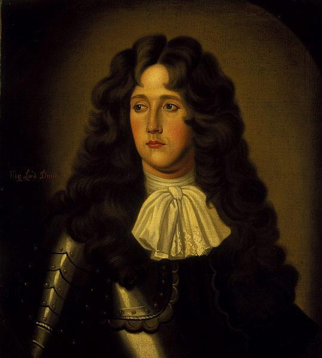
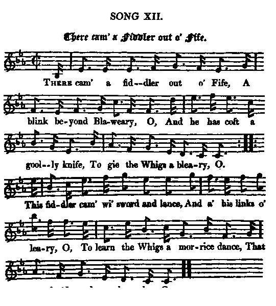
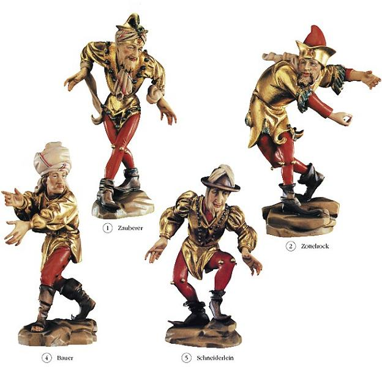

There cam' a Fiddler out o' Fife - Ne'er to return
Le violoneux de Fife - Sans espoir de retour
John Graham, Count of Claverhouse, Viscount Dundee (1649 - 1689)
King William's Death - La Mort du roi Guillaume (1702)
Tune - Melodie
"There cam' a Fiddler out o' Fife"
from Hogg's "Jacobite Reliques" N°12 & 13
Sequenced by Christian Souchon



|
"I first imagined the fiddler that came out of Fife could have been Clavers (
Bonnie Dundy"
) who came from that quarter; and the "gooly knife" and "learning the Whigs a morrice dance that they loved so dearly" applied so well to him as , by the latter the hanging of them is meant. But it could be alternately the archbishop of St. Andrew who was indeed skilled in music."
"At all events, the song is ancient, for the one that follows ("Ne'er to return") was professedly composed to the same tune and was written by a Scots clergyman of the Episcopal persuasion who lived at the time of the Revolution. It was written on the death of King William in imitation of the former. I took the air from a country songster. I don't know if it has been published before". James Hogg's note to songs 12 and 13 in "Jacobite Relics" The collection of bawdy songs "the Merry Muses of Caledonia " found among Robert Burns's papers after his death (1796), has a song entitled "There cam a Cadger out of Fife" . Does it imitate the political song or is it the contrary? |
"J'avais d'abord pensé que le violoneux qui venait de Fife ne pouvait être que Clavers, (
Bonnie Dundy"
), qui était originaire de cette région, et que la "lame à châtrer" et "enseigner aux Whigs la Mauresque qu'ils trouvaient si jolie" lui allaient comme un gant, puisque c'est à la pendaison que cette dernière expression fait allusion. Mais il existe une seconde interprétaion possible: l'archevêque de Saint Andrew qui s'y entendait effectivement en musique."
"Ce qui est sûr, c'est que le chant est ancien, car celui qui le suit ("Sans espoir de retour"), fut, délibérément composé sur la même mélodie par un prêtre de rite Episcopalien qui vécut sous la Glorieuse révolution. Il fut écrit lors de la mort de Guillaume et pastiche le précédent. C'est un paysan qui me l'a chanté et j'ignore si quelqu'un l'a publié avant moi." James Hogg's note to songs 12 and 13 in "Jacobite Relics" Dans le recueil de chansons paillardes "the Merry Muses of Caledonia" trouvé parmi les papiers de Robert Burns après sa mort (1796), on trouve une chanson "Un parasite venait de Fife" . Imite-t-elle la chanson politique ou est-ce le contraire? |

|
THERE CAME A FIDDLER OUT O' FIFE
1. There cam' a fiddler out o' Fife. A blink beyond Blaweary, O, And he has coft a gooly knife, To gie the Whigs a bleary, O. This fiddler cam' wi' sword and lance, And a' his links o'leary, O, To learn the Whigs a morrice dance, [1] That they lov'd wondrous dearly, O. 2. Now he has danced the lads frae hame, Out o'er the hills o' Seiry, O, An' may the deil ride after them, Upon his good gray meary, O : They grew sae bauld on sturt an' strife, That nae man durst gang neary, O, Until the fiddler cam' frae Fife, That bang'd them wi' his geary, O. ************************************************ NE'ER TO RETURN 1. Ne'er to return, let Whigs be sent Out o'er the hills of Syria, [2] Our nation's plague and punishment, Since first we gowns [3] did weary, O ! No more in Britain shall ye stay, Nor pulpits ere come neary, O ! Swith, pack, be gone, without delay, There's ane at hand will fear ye, O ! 2. Now your false principles decay, As treacherous base deliria; Lo! once more you must out of play, An' take the transporteary, O. No more shall villainy defile Our sacred church most deary, O ! Nor you most holy folks be styled, Who God nor king do feary, O ! 3. Away, ye holy cheats, be gone ! No more our kirk come neary, O ! For you must to the hills anon, Dear Cameronianeary, O ! [4] Rear treason and rebellion, To put folks in a steary, O ! But Christians all shall join in one, To turn you tapselteary, O ! 4. That cursed usurping Orange, you Your saviour styled most deary, O ! Soon to the Stygian shade withdrew, And left you in a feary, O ! That treacherous reign did you support, In all your wild deliry, O; Now by the hand of vengeance struck, We'll hang you by the eary, O! 5. When your weak sandy fabrick shook, Whilk put you in a feary, O, His life, like's nose, had mony a crook, Till he went tapselteary, O ! But let the villainous wretch begone, And Heaven our just prayers heary, O ! That royal James may mount the throne, Nor thief nor knave come neary, O. Source: "The Jacobite Relics of Scotland, being the Songs, Airs and Legends of the Adherents to the House of Stuart" collected by James Hogg, published in Edinburgh by William Blackwood in 1819. |
LE VIOLONEUX DE FIFE
1. De Fife un violoneux s'en vint, De plus loin que Blaweary, O, Une lame à châtrer en main, Afin de calmer les Whigs, O. Il a pris son épée, sa lance, Ses livres et manuscrits, O, Pour apprendre aux Whigs une danse: La mauresque [1] est si jolie, O! 2. Les gars emportés par la danse Passent les monts de Seiry, O Ils ont à leurs trousses le diable, Sur sa brave jument grise, O! Et voyez comme ils s'enhardissent Nul n'ose revenir ici, Tant que le violoneux de Fife Y est avec ses diableries! ************************************************ SANS ESPOIR DE RETOUR 1. Chassons sans espoir de retour Les Whigs par les monts de Syrie! [2] Plaies d'Egypte depuis le jour Où l'on revêtit des surplis. [3] Ces îles il vous faut quitter Hors de nos chaires, vils prêcheurs Sans attendre, déguerpissez, Je sais qui peut vous faire peur. 2. Vos faux principes n'ont plus court, Ces délires vils et vicieux; Voyez, le bac est de retour, Il faut que vous quittiez le jeu. Fini la vilenie qui souille Notre sainte Eglise et la Foi Et fait du peuple une gargouille Qui ne craint ni Dieu ni son roi. 3. Dehors, hypocrites tartuffes, De nos temples n'approchez plus! Car seuls les monts sont à vos rites, Chers Caméroniens [4], dévolus. Foin de vos intrigues grossières Qui sement le trouble en nos rangs: Pour que vous mordiez la poussière, On verra s'unir les chrétiens. 4. Orange, cet usurpateur Maudit que vous appréciez tant Descendit au Styx, et la peur Est là qui vous ronge à présent. C'est au règne de l'imposture Que vous vous étiez ralliés. C'est l'heure où la vengeance est mûre: Par les oreilles vous pendrez! 5. Guillot bâtit un édifice Branlant, sur le sable et la peur, Et ses sinueux artifices Ne prirent fin qu'avec sa mort. Oublions donc ce personnage! Qu'un Ciel juste exauce nos vœux: Que Jacques, reprenant sa charge, Chasse les voleurs et les gueux! (Trad. Christian Souchon(c)2009) |
|
[1]
Morris dance, Morisco
(=Moorish dance);
A dance formerly common in England, often performed in pageants, processions, and May games. The dancers, grotesquely dressed and ornamented, took the parts of Robin Hood, Maid Marian, and other fiction characters.
[2] Syria : alludes to the Biblical plagues of Egypt. [3] Gown : hints at Episcopalian rite, as it preserved part of the Catholic pomp in liturgy. [4] Cameronian : see The Cameronian Cat . |
[1]
Mauresque, morisque
(=danse mauresque); danse jadis en vogue en Angleterre, souvent exécutée à l'occasion de solennités, de défilés et de "reverdies". Les danseurs portant des déguisements burlesques interprétaient les rôles de Robin, de Marianne et autres personnages de fiction.
[2] Syrie : allusion aux plaies d'Egypte dont parle la Bible. [3] Surplis : le rite Episcopalien restait proche de la liturgie catholique. [4] Caméronien : cf. Le chat Caméronien . |
|
|
|